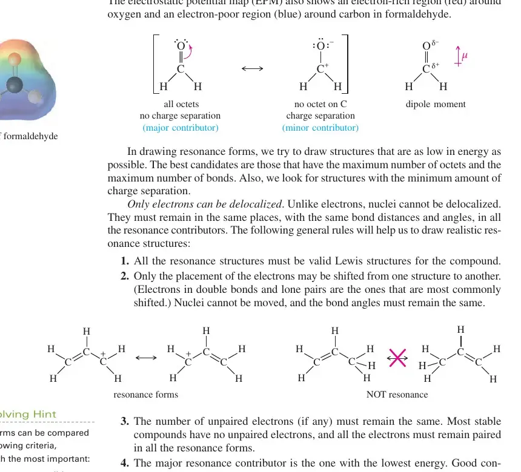
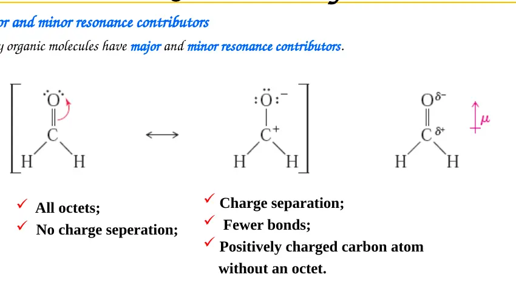
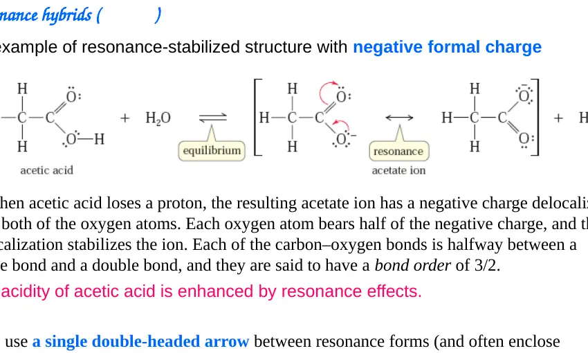
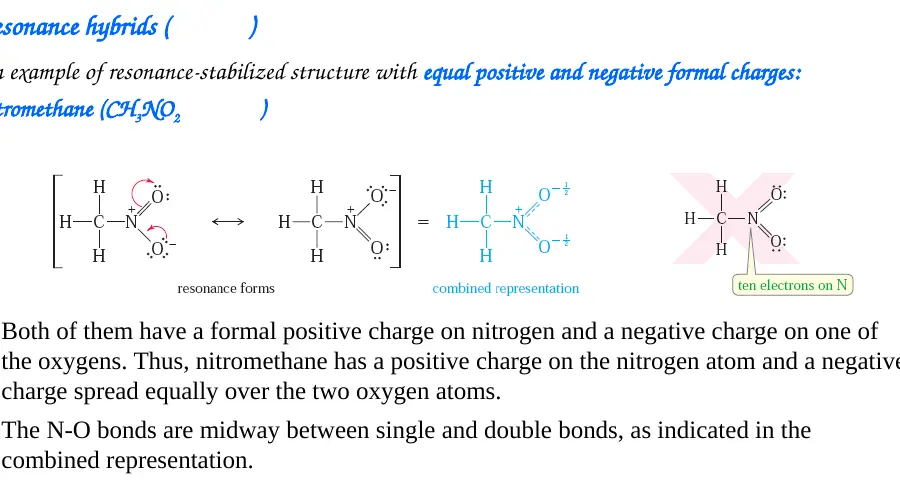
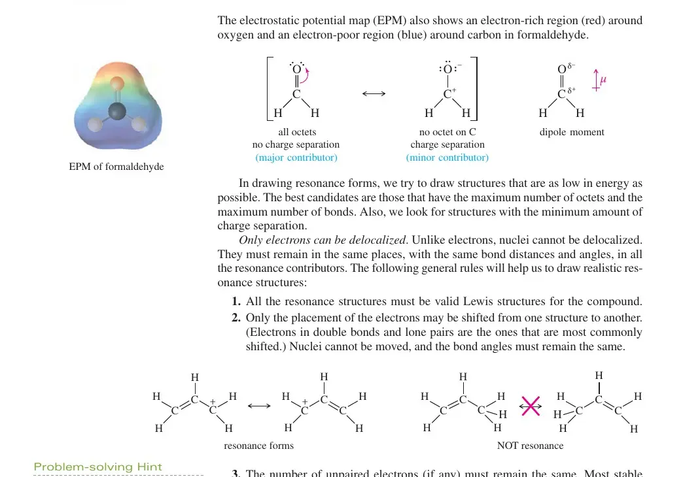
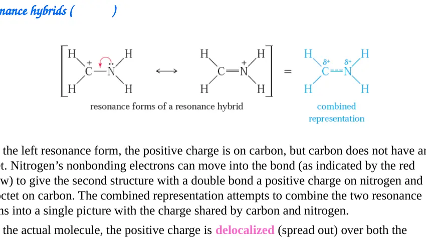
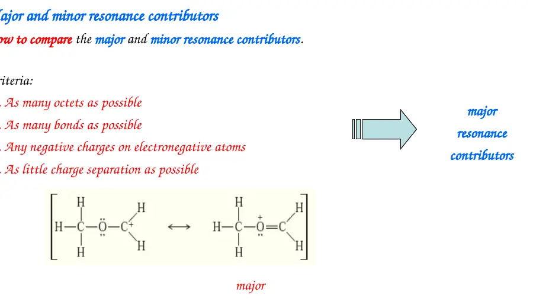
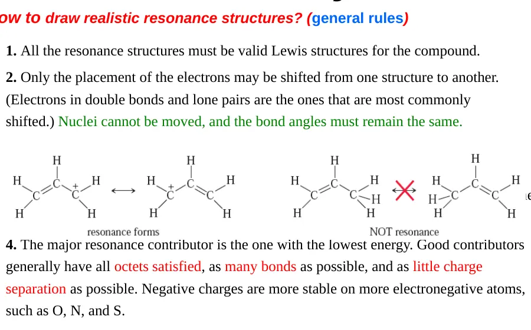

所有贡献式必须拥有相同的原子连接和 σ 键骨架。移动的是孤对电子、π 电子或形式电荷，绝不移动 H 或其他原子。
RESONANCE THEORY · 1–9
Resonance & Electron Delocalization
共振与电子离域 · 每一个贡献式都只是同一分子的电子记账视角
电子移动
主要 / 次要贡献式
共振杂化体
稳定化
先固定三个判断
弯箭头从电子源出发：孤对电子、π 键或负电荷。箭头指向新键、相邻原子或新孤对电子的位置。
用双头共振箭头 ↔，而不是化学平衡箭头 ⇌。真实分子不会在几幅图之间来回切换。
键长、键级和电荷可以介于各个整数路易斯式之间。贡献式的权重不同，不能把每一幅图都当成同等真实。

课件例 1：甲醛的极性与电荷分离式

H₂C=O ↔ H₂C⁺–O⁻
课件：Resonance hybrids / formaldehyde第一幅结构式中，C=O 双键给碳和氧都提供完整八隅体，且没有形式电荷，因此是主要贡献式。第二幅结构式把 π 键电子完全推给氧：氧得到负形式电荷，碳失去八隅体并带正形式电荷，所以是次要贡献式。
H₂C=O ↔ H₂C⁺–O⁻只有 π 电子重新分配；两个碳氢 σ 键和原子位置保持不变。
第二幅并不意味着甲醛真的含有完整的 C⁺–O⁻ 离子对。它的作用是解释 C=O 键为什么高度极化：真实分子表现为 Cδ⁺–Oδ⁻，偶极矩箭头指向氧端。由于氧更电负，电子密度在氧一侧更高；但“部分电荷”与“形式电荷”必须区分。
贡献式比较：两者都有合理价电子总数；第一幅满足更多八隅体且电荷分离更少，因此占主导。第二幅仍有意义，因为它揭示了羰基碳的亲电性和氧的富电子性。
课件例 2：乙酸根的等价贡献式

CH₃COO⁻
课件：resonance-stabilized negative formal chargeCH₃–C(=O)–O⁻ ↔ CH₃–C(–O⁻)=O两幅贡献式完全等价；负电荷在两个氧之间离域。
画第一幅时，羰基氧和单键氧的孤对电子总数必须正确。把羰基 π 电子移到氧上，同时把另一氧的一对孤对电子推入 C–O 键，就得到第二幅。碳原子的位置、甲基与羧基之间的 σ 键都没有改变。
两个氧的化学环境在真实杂化体中等价，因此两条 C–O 键长度相同，键级约为 1.5，而不是一条纯单键加一条纯双键。总负电荷仍然是 −1，只是平均分布在两个氧上。这个离域降低了电荷密度，稳定了乙酸根，也解释了为什么乙酸比相应的醇酸性强得多。
关键判断：这是等价贡献式，不能称某一幅是“真实结构”。酸失去 H⁺ 后，负电荷能在两个高电负性氧之间分散，是共振稳定化的典型来源。
课件例 3：硝基甲烷的电荷离域

CH₃NO₂
课件：nitromethaneCH₃–N⁺(=O)–O⁻ ↔ CH₃–N⁺(–O⁻)=O两个氧互换双键和负形式电荷，贡献式等价。
硝基中的氮与两个氧相连。为了让第二个氧也参与 π 离域，需要把 N=O π 电子移向一个氧，再把另一个氧的孤对电子推入 N–O 键。氮在两幅主要贡献式中都带正形式电荷，负电荷分别落在两个等价氧上。
杂化体因此具有两个相等的 N–O 键，且每个氧都带部分负电荷。课件中的“正电荷在氮、负电荷在氧”是形式电荷记账，不应直接当作两个固定的离子。硝基的强吸电子性正与这种电荷分离和电子离域有关。
不要混淆：硝基甲烷的共振只改变电子位置，不改变 CH₃–N–O 的原子连接；若把 N–O 键改成 N–O–H，就已经变成了不同化合物。
COURSE Q&A · RESONANCE
课程问答：硝酸根的共振式怎么写？
Q硝酸根 NO₃⁻ 的三个共振式如何画？
A
先把 N 放在中心并连接三个 O。为了让第二周期的 N 满足八隅体，每个合法主要贡献式都只能有一个 N=O 双键和两个 N–O 单键：
O₁=N⁺(–O₂⁻)–O₃⁻ ↔ O₁⁻–N⁺(=O₂)–O₃⁻ ↔ O₁⁻–N⁺(–O₂⁻)=O₃双键依次位于 O₁、O₂、O₃；三个贡献式完全等价。
每一式中，中心 N 的形式电荷为 +1；双键 O 为 0；两个单键 O 各为 −1。
FCN + FCO + 2FCO⁻ = +1 + 0 − 2 = −1FC 表示形式电荷；三项之和必须等于硝酸根的总电荷。
画弯箭头时，要同时做两件事：一个单键 O⁻ 的孤对电子推向 N 形成新的 π 键；原 N=O 的 π 电子推回原来的 O。不能只增加一个双键，否则 N 会超过八隅体。
真实硝酸根是平面三角形共振杂化体，三个 N–O 键完全等长。负电荷主要离域在三个等价氧上，而不是固定在其中两个氧上。
BOavg = (2 + 1 + 1)/3 = 4/3BOavg 表示三个等价 N–O 键的平均键级。
课件例 4：烯丙基阳离子

CH₂=CH–CH₂⁺
Wade：allylic cation；课件第 46 页列为共振规则示例CH₂=CH–CH₂⁺ ↔ ⁺CH₂–CH=CH₂π 键向缺电子碳移动，正电荷转移到原 π 键的另一端。
右端碳带空 p 轨道，旁边的 C=C π 键可以把一对电子推向它，形成新的 C=C 键。原来 π 键的另一端失去这对电子，于是正电荷出现在左端。两幅图的三个碳原子和两个 C–C σ 键完全相同。
真实阳离子中，两个末端碳都带部分正电荷，两个 C–C 键都介于单键和双键之间。任何位于两个末端的位置都可能成为亲核试剂进攻的区域，这就是烯丙基取代和烯丙基重排中“多位点反应”的电子基础。
课件例 4b：质子化亚胺鎓离子
[H₂C=NH₂]⁺
课件：resonance hybrid
左式把正电荷放在碳上，但碳只有六个价电子；氮的孤对电子可以推入 C–N 键，得到右式。右式增加了一个 C=N 键并使碳满足八隅体，因此通常贡献更大。真实离子并非在两幅图之间跳动，而是表现为 C–N 键具有部分双键性质、正电荷在两个原子间离域。
与甲醛的对照：甲醛的电荷分离式是次要贡献式；这里的电荷离域同时修复了碳的八隅体，因此共振稳定化更直接。
标志性例子 5：烯醇负离子
CH₃–CO–CH₂⁻
enolate · 非等价贡献式CH₃–C(=O)–CH₂⁻ ↔ CH₂=C(O⁻)–CH₃α 碳负电荷与氧负电荷离域；两个贡献式能量通常不同。
左式把负电荷画在 α 碳，能直接解释碳端的亲核性。把 C–C π 电子推向羰基碳、再把 C=O π 电子推向氧，就得到右式。右式让氧获得完整八隅体并把负电荷放在更电负的氧上，因此通常是更稳定的贡献式。
两幅图不是等价的：氧端贡献式更低能，但碳端贡献式不能删掉，因为实际反应常在碳端形成 C–C 键。共振杂化体同时具有 Oδ⁻ 和 α-Cδ⁻ 特征，这比简单说“负电荷在氧上”更准确。
标志性例子 6：酰胺的共振与平面性
R–C(=O)–NR₂
amide resonanceR–C(=O)–NR₂ ↔ R–C(–O⁻)=N⁺R₂氮的孤对电子进入羰基 π 系统，形成部分 C–N 双键。
酰胺氮的孤对电子与羰基 π 轨道重叠。电子离域使 C–N 键比普通 C–N 单键短，并具有部分双键性质；羰基碳、氧、氮及其相邻原子倾向共平面，以保持轨道有效重叠。
这组共振解释三个常见性质：酰胺 C–N 键旋转受限；氮的孤对电子不再像胺那样容易接受 H⁺，所以酰胺氮碱性显著降低；羰基氧仍保留较高电子密度，常是氢键受体。
标志性例子 7：苯氧负离子与羧酸根的比较
Ph–O⁻
phenoxidePh–O⁻ ↔ 邻位负电荷 ↔ 对位负电荷氧的孤对电子可与芳环 π 系统重叠，负电荷可延伸到邻位和对位碳。
苯氧负离子的负电荷主要仍集中在氧上，但有一部分可以离域到芳环的邻位和对位。与羧酸根相比，这些碳原子电负性较低，因此碳负电荷贡献式能量较高，稳定化较弱。这也是苯酚酸性弱于羧酸的重要原因之一。
该例子还提醒我们：共振式数量多不等于稳定化一定强。必须比较贡献式能量、负电荷落点和是否保持芳香性。画出破坏芳香环的形式并不能自动增加“共振稳定性”。
标志性例子 8：苯的芳香性
苯：两个 Kekulé 贡献式
benzene六元环中交替双键的两幅 Kekulé 式 ↔ 真实芳香杂化体六个 p 轨道共同形成离域 π 体系，六条 C–C 键等价。
两幅 Kekulé 式只改变三对 π 电子的画法，原子骨架不变。真实苯分子中六条 C–C 键长度相等，键级约为 1.5，π 电子分布在整个环上。圆圈只是离域 π 电子的简洁符号，不表示分子在两幅 Kekulé 图之间切换。
用 Hückel 规则描述时，苯有 6 个 π 电子，符合 4n + 2（n = 1），因此获得芳香稳定化。若某个“共振贡献式”让环失去连续 p 轨道重叠，它就不能被当作正常的苯共振式。
主要 / 次要贡献式：一套可执行的排序

第二周期 C、N、O、F 尤其不能轻易接受不完整八隅体。满足八隅体的式子通常更重要。
在八隅体都合理时，成键数更多、键级更高的贡献式通常更低能。
负电荷优先放在更电负的原子上；正电荷优先放在较不电负的原子上。
在其他条件接近时，没有额外正负电荷分离的式子通常更稳定。
这些是比较能量的启发式规则，不是机械打分表。等价贡献式共同决定真实结构；非等价贡献式则以低能者为主，高能者仍可能解释反应性。
哪些画法不属于共振？

质子从 O 转到 C、H 从一个位置转到另一个位置，属于互变异构或反应过程，不是共振。
把一个 C–C σ 键断开或把原子重新连接，得到的是不同结构或重排产物。
绕 σ 键旋转得到构象异构体；构象变化不等同于电子离域。
共振贡献式写 ↔；⇌ 表示两个可分离或可互相转化的化学物种，含义不同。
共振如何改变性质与反应位置
共轭碱的负电荷若能分散到多个合适原子上，去质子化产物能量会降低，原酸通常更强。判断时应比较共轭碱的稳定性，而不是只数原分子能画多少幅共振式。
高能贡献式即使权重较小，也能揭示真实分子的部分电荷。甲醛的 C⁺–O⁻ 次要式解释羰基碳的亲电性；烯醇负离子的碳负电式解释其 C-亲核性。
离域会使相关键获得分数键级。乙酸根两条 C–O 键等长；酰胺 C–N 键具有部分双键性质，因此更短且旋转受限。
离域通常改变振动频率和化学位移。共轭可降低某些羰基伸缩频率；等价共振环境还会减少 NMR 中不等价信号的数量。
这些性质不是“共振式之间快速切换”的结果，而是同一个离域电子结构本身的表现。继续阅读第二课的分子轨道与 HOMO–LUMO，可以用轨道重叠和能级把离域与反应性统一起来。
做题时的六步检查
① 先数总价电子，确认每幅图电子数相同。
② 画出固定原子骨架，标出孤对、负电荷或 π 键。
③ 每次只移动一对电子，箭头从电子源指向电子终点。
④ 检查八隅体和形式电荷，排除不合法路易斯式。
⑤ 比较贡献式能量，判断等价、主要或次要。
⑥ 回到杂化体，说明真实键长、部分电荷、稳定化与反应位置。